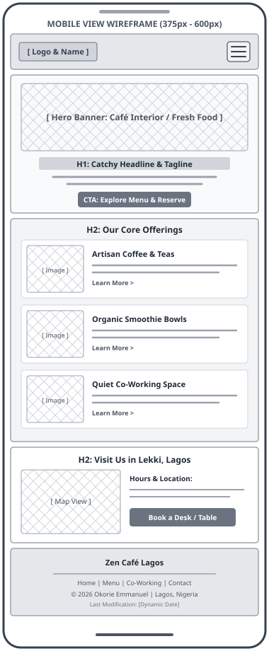
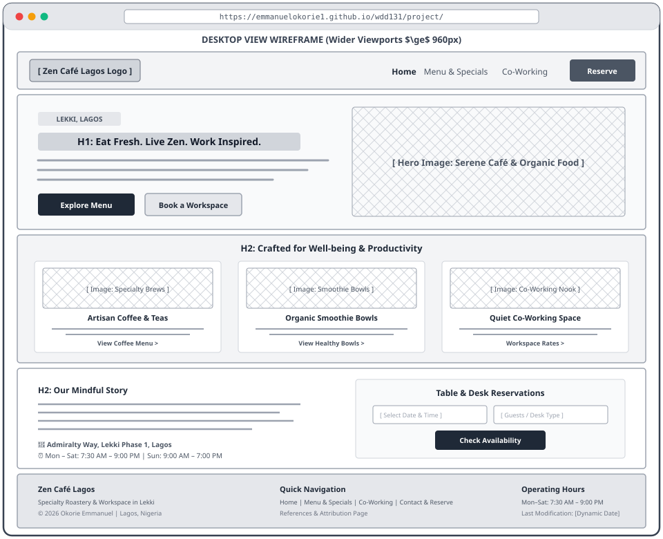

1. Site Name
Proposed Site Name: Zen Café Lagos
Rationale: "Zen Café Lagos" represents a tranquil, health-centered café, artisan coffee roastery, and co-working sanctuary situated in the vibrant coastal district of Lekki, Lagos, Nigeria. The name blends the concept of mindfulness, calm productivity, and wholesome living ("Zen") with artisanal food culture and community gathering ("Café"), grounded in its local geographic identity ("Lagos").
Optional Domain Availability: zencafelagos.com (or zencafe-lagos.org)
2. Site Purpose
The purpose of the Zen Café Lagos website is to serve as an inviting, comprehensive digital hub for customers, remote professionals, students, and health enthusiasts in Lagos. The website fulfills several key objectives:
- Showcase Artisanal Offerings: Present an interactive, dynamic menu featuring specialty single-origin coffees, organic smoothie bowls, cold-pressed juices, and fresh baked goods with dietary filters (vegan, gluten-free, keto).
- Promote the Co-Working Sanctuary: Highlight the amenities of the café's quiet workspace zone, including high-speed fiber internet, ergonomic seating, private call booths, and power backup.
- Facilitate Reservations & Inquiries: Provide an intuitive booking form where visitors can reserve desks, meeting rooms, or tables for group gatherings.
- Community & Location Information: Display operating hours, precise location in Lekki Phase 1, customer reviews, and upcoming wellness and coffee workshop events.
3. Scenarios
The target audience includes remote tech workers, creative freelancers, university students, and health-conscious food lovers living in or visiting Lagos. The website's architecture and content are driven by answering real user questions:
Scenario 1: Remote Worker / Freelancer
"Does Zen Café Lagos provide reliable high-speed internet, ample power outlets, and a distraction-free work environment for remote work, and can I reserve a quiet desk in advance?"
Scenario 2: Health & Nutrition Enthusiast
"What nutritious, dairy-free, or plant-based breakfast options and organic smoothie bowls are available, and what ingredients are used in each bowl?"
Scenario 3: Event Organizer / Weekend Visitor
"Where exactly in Lekki is the café located, what are the weekend opening hours, and how can I inquire about booking a small team table or meeting booth?"
Scenario 4: Specialty Coffee Connoisseur
"What coffee beans and brewing methods (Pour-over, AeroPress, Cold Brew) are featured this season, and can I purchase freshly roasted beans to take home?"
4. Color Scheme
The chosen color scheme reflects mindfulness, fresh organic living, and the welcoming warmth of handcrafted hospitality. These colors meet WCAG AA and AAA accessibility contrast standards across all viewports and are actively used to style this planning document.
Color Application Matrix
| Page Element | Color Name | Hex Code | Contrast & Accessibility Role |
|---|---|---|---|
| Header & Footer Background | Deep Forest Green | #1B4332 |
Grounding brand element with white text (Contrast Ratio 11.2:1 – AAA compliant) |
| Section Headings (h1, h2, h3) | Deep Forest Green | #1B4332 |
Establishes clear typographic hierarchy against light backgrounds |
| Call-to-Action Buttons & Badges | Warm Terracotta | #C86D51 |
Vibrant warm focal point guiding user actions and interactive states |
| Page Canvas Background | Soft Off-White | #F8F9FA |
Calm, glare-free background surface promoting comfortable reading |
| Card & Form Containers | Pure White | #FFFFFF |
Elevated content surfaces with subtle borders and shadow |
| Body Copy & Paragraphs | Charcoal Black | #222222 |
Optimum legibility and contrast ratio of 15.8:1 on white surfaces |
5. Typography
The typography pairing blends modern geometric precision for headings with clean, highly readable sans-serif typography for running body text, imported from Google Fonts:
Applied to: Top navigation branding, page titles (<h1>), section headers (<h2>), card titles (<h3>), and call-to-action buttons.
Applied to: Body copy, paragraphs, list items, table text, form input fields, labels, and footer meta details.
6. Wireframes
Wireframes establish the content hierarchy, component positioning, and user interaction model for the Zen Café Lagos home page across mobile and desktop viewports, following the PARC (Proximity, Alignment, Repetition, and Contrast) design principles.
Mobile View Wireframe (Small Screens • 375px – 600px)
A single-column vertical layout optimized for thumb-driven navigation, fast scanning, and touch-friendly tap targets.

Mobile Layout Specifications:
- Sticky Header: Brand logo and title on the left with an accessible hamburger menu icon (
#menu-button) toggling the navigation drawer. - Hero Banner: Compact hero image block with centered headline, concise tagline, and prominent call-to-action button (minimum 44px tap target).
- Offerings Stack: Single-column card stack displaying Coffee, Smoothie Bowls, and Co-Working areas with thumbnail images, title, short description, and direct link.
- Location & Hours: Quick-reference interactive card with address in Lekki Phase 1, operating hours, and a direct reservation button.
- Footer: Centered branding, secondary site links, copyright year, and dynamic document last-modified date.
Desktop View Wireframe (Wider Viewports • ≥ 960px)
A multi-column grid layout utilizing the wider screen canvas for side-by-side content storytelling, multi-item visual browsing, and streamlined reservations.

Desktop Layout Specifications:
- Header & Navigation: Brand logo on the left with full horizontal navigation links (Home, Menu & Specials, Co-Working, Contact & Reserve) and an accented "Reserve" action button.
- Two-Column Hero: Left column features the primary headline, value proposition paragraph, and dual CTA buttons ("Explore Menu" and "Book a Workspace"). Right column showcases a high-resolution hero image of the café sanctuary.
- Three-Column Offerings Grid: CSS Grid displaying three cards side-by-side (Artisan Coffee & Teas, Organic Smoothie Bowls, Quiet Co-Working Space) with hover elevation and consistent visual alignment.
- Two-Column Story & Reservation Section: Left column shares the Zen story and operating hours; right column provides a streamlined table/desk reservation module.
- Three-Column Footer: Organized into Brand Information, Quick Navigation Links, and Hours & Dynamic Meta Details.